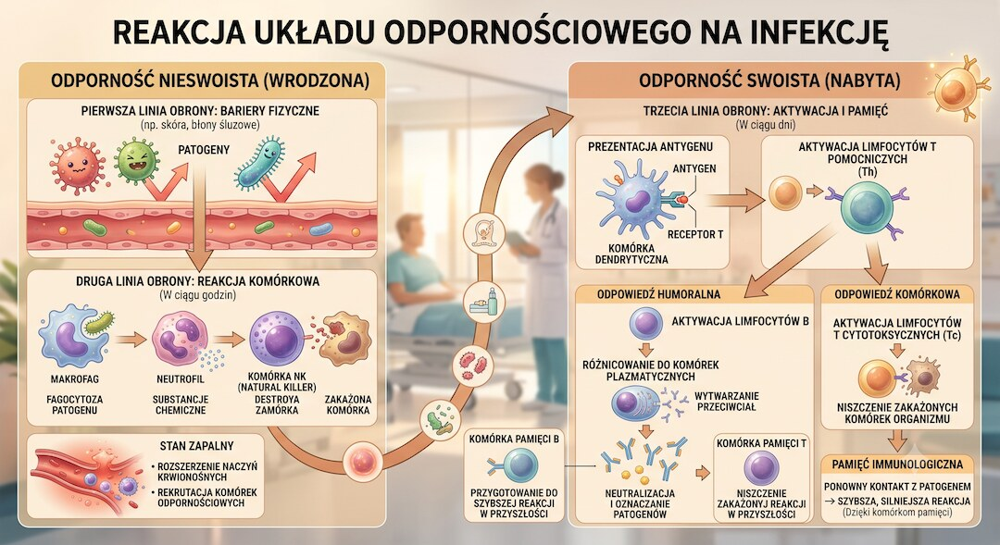
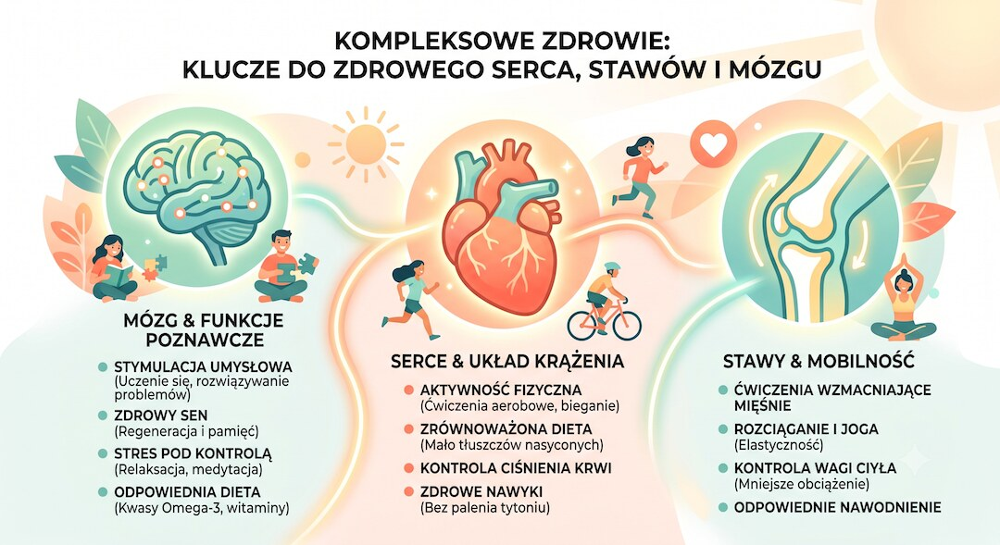
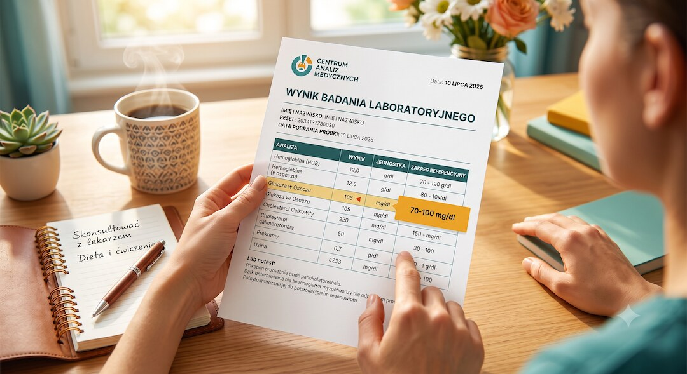

Interleukina 6 (IL-6) to jedna z najczęściej oznaczanych cytokin prozapalnych w diagnostyce laboratoryjnej. Powstaje w odpowiedzi na infekcje, urazy i stany zapalne, a jej stężenie we krwi rośnie szybciej niż popularne CRP. Poniżej znajdziesz jasne wyjaśnienie, skąd bierze się IL-6, z jakimi chorobami jest kojarzona, jak wygląda badanie, ile kosztuje w polskich laboratoriach i jak czytać wynik.
Szybka odpowiedź
Interleukina 6 (IL-6) to cytokina szybko rosnąca przy infekcji, urazie lub aktywnym stanie zapalnym; badanie wykonuje się z krwi żylnej, zwykle bez bycia na czczo, a wynik trzeba zestawić z objawami, CRP, morfologią, prokalcytoniną, temperaturą ciała i decyzją lekarza prowadzącego, szczególnie po 50. roku życia.
Kluczowe wnioski
- IL-6 to cytokina prozapalna niezbędna w obronie immunologicznej, ale przewlekle podwyższona wskazuje na trwający stan zapalny.
- Podwyższone IL-6 towarzyszy chorobom autoimmunologicznym, sercowo-naczyniowym, sepsie, depresji oraz procesowi starzenia.
- Badanie kosztuje zwykle 100–130 zł w polskich laboratoriach, wynik jest gotowy w 1–3 dni i nie wymaga bycia na czczo.
- Norma referencyjna to najczęściej poniżej 1,8 pg/ml, ale zawsze trzeba porównywać wynik z zakresem podanym przez konkretne laboratorium.
Czym jest interleukina 6 i jak działa w organizmie?
Interleukina 6 to białko sygnałowe zwane cytokiną, wytwarzane głównie przez monocyty, makrofagi, komórki śródbłonka naczyń, fibroblasty oraz pobudzone limfocyty Th. Organizm zaczyna ją produkować w odpowiedzi na infekcję, uraz tkanek lub inny bodziec zapalny, uruchamiając kaskadę reakcji obronnych.
Wytwarzanie IL-6 pobudzają inne cząsteczki układu odpornościowego, takie jak interleukina 1, interferon czy czynnik martwicy nowotworu (TNF-α). Sama IL-6 pełni rolę wielofunkcyjną: uruchamia reakcję ostrej fazy w wątrobie, pobudza szpik kostny do produkcji krwinek i płytek, a także podnosi temperaturę ciała podczas gorączki.
IL-6 wpływa też bezpośrednio na odporność nabytą. Stymuluje limfocyty B do przekształcania się w komórki plazmatyczne wytwarzające przeciwciała, a wspólnie z interleukiną 1 aktywuje limfocyty T rozpoznające antygen. Krótko mówiąc, bez IL-6 organizm miałby poważny problem ze skuteczną obroną przed infekcją.
Ten sam mechanizm, który ratuje życie w ostrej infekcji, staje się problemem, gdy działa bez przerwy. Przewlekle podwyższone IL-6 przestaje być pomocnikiem, a zaczyna napędzać stan zapalny, który obciąża naczynia krwionośne, stawy i inne tkanki. O tym, z jakimi chorobami się to wiąże, piszemy w kolejnej części.

Jakie choroby wiążą się z podwyższonym poziomem IL-6?
Podwyższone stężenie interleukiny 6 towarzyszy bardzo różnym schorzeniom, od infekcji po choroby przewlekłe. Najsilniej kojarzy się je z chorobami autoimmunologicznymi i zapalnymi, ale coraz więcej badań łączy IL-6 także z chorobami serca, depresją i procesem starzenia.
- reumatoidalne zapalenie stawów (RZS) i młodzieńcze idiopatyczne zapalenie stawów
- nieswoiste zapalenia jelit – wrzodziejące zapalenie jelita grubego i choroba Leśniowskiego-Crohna
- stwardnienie rozsiane i olbrzymiokomórkowe zapalenie tętnic
- miażdżyca i choroby układu sercowo-naczyniowego
- przewlekła choroba nerek
- sepsa oraz zespół uwalniania cytokin po terapii CAR-T
W badaniach nad chorobami serca podwyższone IL-6 wiąże się z większym ryzykiem zawału, niewydolności serca, udaru i miażdżycy tętnic obwodowych. U pacjentów z pośrednim ryzykiem sercowo-naczyniowym kierowanych na koronarografię stężenie IL-6 powyżej 1 pg/ml zapowiadało istotną chorobę wieńcową, co pozwala lepiej ocenić realne ryzyko pacjenta.
IL-6 ma też związek ze zdrowiem psychicznym. U osób z depresją jej stężenie bywa średnio niemal dwukrotnie wyższe niż u osób zdrowych, a cytokina ta przenika barierę krew-mózg i wpływa na metabolizm serotoniny oraz dopaminy. To jeden z argumentów za tak zwaną zapalną teorią depresji.
U osób starszych IL-6 bywa podwyższona 2–4-krotnie w porównaniu z młodymi dorosłymi nawet bez ostrej infekcji. Zjawisko to nazywa się inflammaging, czyli przewlekłym, niskonasilonym stanem zapalnym towarzyszącym starzeniu, który uznaje się za jeden z mechanizmów sprzyjających chorobom wieku podeszłego. Z tym samym tłem metabolicznym łączy się temat tłuszczu trzewnego i przewlekłego stanu zapalnego.

Jak wygląda badanie interleukiny 6 i ile kosztuje?
Badanie interleukiny 6 wykonuje się z krwi żylnej pobranej zwykle z żyły łokciowej, a materiałem do analizy jest surowica. To zwykłe pobranie krwi, bez specjalnych procedur przygotowawczych, podobnie jak wiele kontroli opisanych w poradniku o badaniach krwi po 50-tce .
Na badanie nie trzeba przychodzić na czczo, choć laboratoria zalecają, aby tuż przed pobraniem nie jeść obfitego posiłku. Wynik jest zwykle gotowy w ciągu 1–3 dni roboczych, w zależności od laboratorium i zastosowanej metody analitycznej.
| Laboratorium | Cena badania | Czas oczekiwania |
|---|---|---|
| Laboratorium sieciowe typu ALAB | ok. 110–130 zł | 1 dzień roboczy |
| Laboratorium sieciowe typu Synevo | ok. 110–130 zł | 1 dzień |
| Mniejsze laboratorium lokalne (np. DOLMED) | od ok. 100 zł | 1–3 dni |
Rozrzut cen wynika z regionu, metody analitycznej i tego, czy badanie kupuje się pojedynczo, czy w pakiecie z innymi parametrami, na przykład morfologią czy D-dimerami. Warto porównać ofertę kilku placówek, zwłaszcza jeśli badanie ma być powtarzane, bo dopiero zmiana wyniku w czasie daje pełny obraz sytuacji.
Jak czytać wynik badania IL-6? Co oznaczają podwyższone wartości?
Typowa wartość referencyjna dla interleukiny 6 to poniżej 1,8 pg/ml, jednak ten zakres różni się między laboratoriami w zależności od metody oznaczenia i użytych odczynników. Dlatego wynik zawsze trzeba porównywać z normą podaną na wydruku z konkretnego laboratorium, a nie z liczbą znalezioną w internecie.
IL-6 rośnie bardzo szybko, bo już w ciągu 2 godzin od początku infekcji, i osiąga szczyt po około 6 godzinach, podczas gdy CRP zaczyna wzrastać dopiero po 6–8 godzinach i osiąga maksimum po 24–48 godzinach. To sprawia, że IL-6 bywa wcześniejszym sygnałem ostrego stanu zapalnego niż CRP.
IL-6 ma też krótki okres półtrwania – po skutecznym leczeniu infekcji jej stężenie potrafi wrócić do normy nawet w ciągu doby, znacznie szybciej niż CRP. Z tego powodu bywa wykorzystywana do monitorowania odpowiedzi na leczenie sepsy, a nie tylko do jej rozpoznania.
Pojedynczy podwyższony wynik IL-6 nie jest samodzielną diagnozą. Wartość tej cytokiny trzeba zawsze odczytywać razem z objawami klinicznymi, wywiadem lekarskim i innymi badaniami, takimi jak CRP, prokalcytonina czy morfologia. Szerszy kontekst takich wyników opisuje przewodnik o markerach krwi i zdrowiu. Ostateczną interpretację i decyzje diagnostyczne powinien podejmować lekarz.

Dlaczego badanie IL-6 jest tak ważne w medycynie?
Interleukina 6 zyskała status jednego z ważniejszych markerów we współczesnej medycynie, bo pomaga ocenić ciężkość stanu zapalnego szybciej niż tradycyjne badania. Ma znaczenie zarówno w ostrych stanach zagrożenia życia, jak i w długoterminowej ocenie ryzyka chorób przewlekłych.
W sepsie i wstrząsie septycznym wysokie IL-6 wiąże się z gorszym rokowaniem, a jej seryjne pomiary pomagają ocenić, czy leczenie działa. Podobnie w ciężkim przebiegu COVID-19 oraz w zespole uwalniania cytokin po terapii CAR-T gwałtowny wzrost IL-6 bywa sygnałem burzy cytokinowej wymagającej pilnej interwencji.
W kardiologii IL-6 pomaga dokładniej oszacować ryzyko sercowo-naczyniowe u pacjentów, u których tradycyjne czynniki ryzyka nie dają jednoznacznej odpowiedzi. Badania wskazują, że wysoka IL-6 wiąże się z większym ryzykiem zawału serca, niewydolności serca i udaru, niezależnie od poziomu cholesterolu.
Znaczenie IL-6 potwierdza też rozwój leków celowanych w tę cytokinę lub jej receptor, takich jak tocilizumab czy sarilumab. Stosuje się je między innymi w reumatoidalnym zapaleniu stawów, olbrzymiokomórkowym zapaleniu tętnic, zespole uwalniania cytokin oraz w wybranych ciężkich przypadkach COVID-19.
Co obniża, a co podnosi poziom interleukiny 6?
IL-6 bywa nazywana miokiną, ponieważ mięśnie szkieletowe uwalniają ją także podczas wysiłku fizycznego, niezależnie od stanu zapalnego. To zaskakujące, bo pojedynczy, intensywny trening chwilowo podnosi IL-6 we krwi, a mimo to regularna aktywność fizyczna w dłuższej perspektywie obniża jej podstawowe stężenie.
Do czynników, które podnoszą przewlekłe, spoczynkowe stężenie IL-6, badacze zaliczają otyłość, siedzący tryb życia, przewlekły stres, niedobór snu oraz palenie papierosów. Jeśli problemem jest nocne wybudzanie i zmęczenie, praktyczne podstawy zbiera artykuł o śnie po 50-tce. Wspólnym mianownikiem jest długotrwałe obciążenie organizmu, a nie jednorazowy epizod.
Z kolei regularny, umiarkowany ruch wiąże się w badaniach obserwacyjnych z niższym poziomem stanu zapalnego w spoczynku. To zależność, a nie dowód prostej przyczynowości, dlatego warto traktować aktywność fizyczną jako jeden z elementów zdrowego stylu życia, a nie samodzielny sposób na "obniżenie IL-6".
Zobacz też: ai w medycynie czy naprawde pomaga pacjentom fakty badania.
Najczęściej zadawane pytania
Co oznacza podwyższona interleukina 6 we krwi?
Podwyższona IL-6 zwykle oznacza aktywny stan zapalny w organizmie – może to być infekcja, choroba autoimmunologiczna, uraz albo przewlekły proces zapalny towarzyszący na przykład otyłości czy starzeniu. Sam wynik nie mówi jednak, jaka jest przyczyna, dlatego zawsze wymaga oceny lekarskiej w kontekście objawów i innych badań.
Czy badanie IL-6 wymaga bycia na czczo?
Na badanie interleukiny 6 zwykle nie trzeba przychodzić na czczo. Warto jednak unikać obfitego posiłku tuż przed pobraniem, przyjść spokojnie i stosować instrukcję konkretnego laboratorium, bo zalecenia organizacyjne mogą się różnić między placówkami.
Ile kosztuje badanie interleukiny 6 w Polsce?
Cena badania IL-6 w prywatnych laboratoriach w Polsce mieści się zwykle w przedziale 100–130 zł, w zależności od placówki, regionu i tego, czy badanie kupowane jest osobno, czy w pakiecie z innymi parametrami.
Czym IL-6 różni się od CRP jako marker stanu zapalnego?
IL-6 rośnie znacznie szybciej niż CRP – już w ciągu 2 godzin od bodźca zapalnego i osiąga szczyt po około 6 godzinach, podczas gdy CRP potrzebuje 24–48 godzin. IL-6 szybciej też wraca do normy po ustąpieniu stanu zapalnego, dlatego bywa przydatna do wczesnego wykrywania i monitorowania leczenia.
Czy da się samodzielnie obniżyć poziom interleukiny 6?
Badania obserwacyjne wiążą regularną aktywność fizyczną, prawidłową masę ciała, dobry sen i niepalenie z niższym spoczynkowym poziomem IL-6. To jednak zależności statystyczne, a nie gwarancja efektu u konkretnej osoby, a leczenie chorób powodujących podwyższone IL-6 zawsze powinno przebiegać pod opieką lekarza.
Źródła
- IL-6 in Inflammation, Immunity, and Disease – przegląd w PMC (NIH)
- Interleukin 6 in autoimmune and inflammatory diseases: a personal memoir – PMC
- Systematic Review on the Role of IL-6 and IL-1β in Cardiovascular Diseases – PMC
- Elevated serum interleukin-6 is predictive of coronary artery disease – PMC
- Procalcitonin as a diagnostic marker and IL-6 as a prognostic marker for sepsis – PubMed
- The Diagnostic Performance of Interleukin-6 and C-Reactive Protein for Early Identification of Neonatal Sepsis – PMC
- Badanie Interleukina 6 – cena, norma i wynik – Synevo Laboratorium Medyczne
- Interleukina 6 (IL-6) cytokina prozapalna – opis badania – ALAB laboratoria
- Inflammaging – przewlekły stan zapalny a starzenie się organizmu – Centrum Wiedzy ALAB
- Interleukina 6 (IL-6) i wysiłek fizyczny – ALAB sport
Uwaga: Artykuł ma charakter informacyjny i edukacyjny. Nie zastępuje konsultacji lekarskiej, diagnozy ani leczenia.